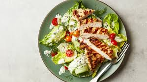

Go back home
Chicken Salad Recipe
A refreshing, healthy, and satisfying salad featuring tender grilled chicken, crunchy vegetables, and a creamy dressing — perfect for a light lunch or dinner.
Preparation time
- Total: 30 minutes
- Preparation: 15 minutes
- Cooking: 15 minutes
Ingredients
- 2 grilled chicken breasts (sliced)
- 1 head lettuce (chopped)
- 1 cup cherry tomatoes (halved)
- 1 cucumber (sliced)
- 1/2 red onion (thinly sliced)
- 1/2 cup sweet corn
- 1/2 cup shredded carrots
- 2 boiled eggs (sliced)
- Dressing of choice (e.g., ranch, vinaigrette)
- Salt and pepper to taste
Instructions
- Prepare ingredients: Wash and slice all vegetables. Grill and slice chicken breasts.
- Assemble salad: In a large bowl, mix lettuce, tomatoes, cucumber, onion, corn, and carrots.
- Add protein: Top with sliced chicken and eggs.
- Dress and season: Drizzle with your favorite dressing and season with salt and pepper.
- Serve: Serve immediately chilled or at room temperature.
Nutrition
| Calories | 320kcal |
| Carbs | 10g |
| Protein | 25g |
| Fat | 18g |